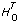

(2)
(2)Suppose that you have collected samples from a transducer (Y Values) and you want to solve for the coefficients of the model:
y = b0 + b1sin(x) + b2cos(x) + b3x2
To build H, you set each column to the independent functions evaluated at each x value. Assuming there are 100 x values, the following equation gives H.
Given that you have the independent X Values and observed Y Values, the following block diagram demonstrates how to build H and use the General Linear Fit VI.
The general linear fit problem can be described as follows.
Given a set of observation data, find a set of coefficients that fit the linear model given by the following equation.
where b is the set of Coefficients, n is the number of elements in Y Values and the number of rows of H, and k is the number of Coefficients.
xij is your observation data, which is contained in H.
Equation (1) also can be written as Y=HB.
This is a multiple linear regression model, which uses several variables xi0, xi1, …, xik–1 to predict one variable yi. In contrast, the Linear Fit, Exponential Fit, and General Polynomial Fit VIs are all based on a single predictor variable, which uses one variable to predict another variable.
In most cases, we have more observation data than coefficients. The equations in (1) may not have the solution. The fit problem becomes to find the coefficients B that minimize the difference between the observed data yi and the predicted value zi
The General Linear Fit VI uses the least chi-square plane method to obtain the coefficients in (1), that is, finding the solution B which minimizes the quantity:
(2)
where
In this equation,  is the Standard Deviation. If the measurement errors are independent and normally distributed with constant standard deviation, i = , the preceding equation is also the least-square estimation.
is the Standard Deviation. If the measurement errors are independent and normally distributed with constant standard deviation, i = , the preceding equation is also the least-square estimation.
There are different ways to minimize  2.
2.
One way to minimize 2 is to set the partial derivatives of 2 to zero with respect to b0, b1, …, bk – 1.
The preceding equations can be derived to:
(3)
 is the transpose of H0.
Equation (3) is also called a normal equation of the least-square problems. You can solve them using LU or Cholesky factorization algorithms, but the solution from the normal equations is susceptible to round-off error.
An alternative, and preferred, way to minimize 2 is to find the least-square solution of equations
H0B = Y0
You can use QR or SVD factorization to find the solution, B. For QR factorization, you can choose the Householder, Givens, and Givens2 (also called fast Givens) algorithms.
Different algorithms can give you different precision, and in some cases, if one algorithm cannot solve the equation, perhaps another algorithm can. You can try different algorithms to find the best one based on your observation data.
The following equation computes the Covariance matrix C.
The following equation gives Best Fit Z.
The following equation gives mse.
The polynomial fit that has a single predictor variable can be thought of as a special case of multiple regression. If the observation data sets are {xi, yi} where i = 0, 1, ..., n – 1, the following equation gives the model for polynomial fit.
| (4) |
i = 0, 1, 2,..., n – 1.
Combining equations (1) and (4) results in the following relationships.
xi0 = xi0, xi1 = xi, xi2 = x12, …xik–1 = xik–1
In this case, you can build H as follows:
Instead of using xij = xji, you also can choose another function formula to fit the data sets {xi, yi}. In general, you can select xij = fj(xi). Here, fj(xi) is the function model that you choose to fit your observation data. In polynomial fit, fj(xi) = xij.
In general, you can build H as follows:
The following equation gives your fit model.
yi = b0f0(x) + b1f1(x) + … + bk–1fk–1(x)